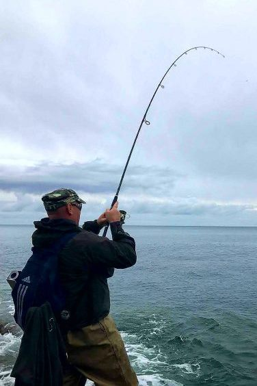
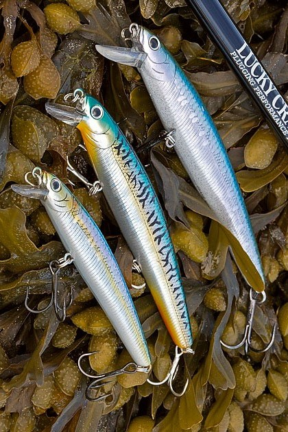
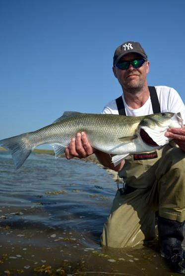

Bass Angling In Ireland

Why Bass?
The bass is one of the most exciting sport fish targeted by sea anglers in Ireland. A challenging species to find and catch, these big, powerful predators can grown to several kilograms in weight. Bass put up a strong fight and can make long, clean runs, giving the lucky anglers who catch these superb “bars of silver” a great angling experience.
Want to get started in bass angling? Have a look at this short video for a flavour of bass angling in Ireland, and check out the following sections for some tips and advice on fishing for bass from the shore. Then get out there and try it!
Where to catch them
Location, location, location — this mantra is true for bass angling too. But anglers must also consider weather and sea conditions, the moon and tides, time of day and time of year.
This page gets you started on finding bass marks and deciding when to fish them.
How to catch them
One fish . . . and lots of ways to catch it. Lure fishing or fly fishing? What about catching bass with bait? With bass, the options are endless.
This page gives you a brief introduction to the main methods of shore fishing for bass, as well as the tackle you need for each.
Good to know
You can go to your local beach, chuck it and see — but there is more to bass angling to discover.
This page gives you some ideas for getting more out of bass angling. For great ways to meet fellow bass anglers, check out getting involved with sea angling clubs, taking part in competitions, or learning more with an angling guide.
Did You Know . . . ? Bass Biology
- Bass (Dicentrarchus labrax) spawn off-shore. The pelagic larvae drift inshore to settle along the coast.
- Young bass live in estuaries for about four years before they move to open waters
- Bass are a relatively slow growing fish. A 40cm bass may be aged between 6 and 10 years old.
- Bass are a long-lived fish, and they may survive for up to 20 years.
- Bass are migratory. In summer, adult bass hunt close to shore along the coast, and in winter, they migrate off-shore.
Interested in Citizen Science?
Did you know that anglers can contribute valuable help to fishery scientists working on bass conservation? Research for bass conservation depends on citizen science: the collection of data by members of the public in collaboration with scientists.
Bass anglers can add an extra dimension to their sport and help bass conservation research by collecting scale samples for analysis or by tagging bass for tracking studies.
Important Notice!
This website was developed as a student assignment in web design. Any errors or omissions are solely those of the author, Rory Feeney.
This website does not represent the views of Inland Fisheries Ireland, any other organisation or any other individual. I gratefully acknowledge my colleagues in Inland Fisheries Ireland and Henry Gilbey for providing information and access to images.